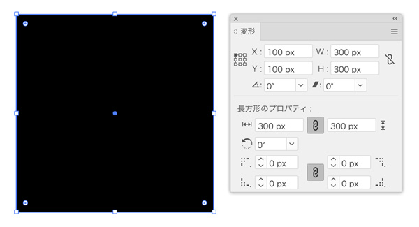
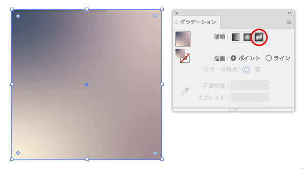
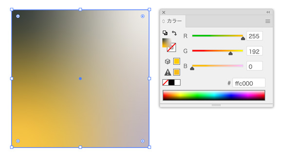
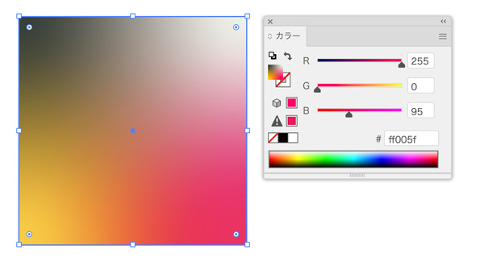
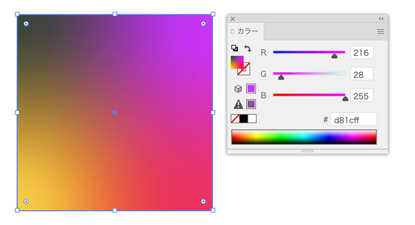
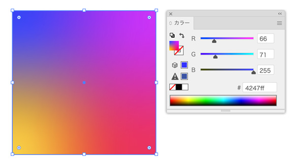
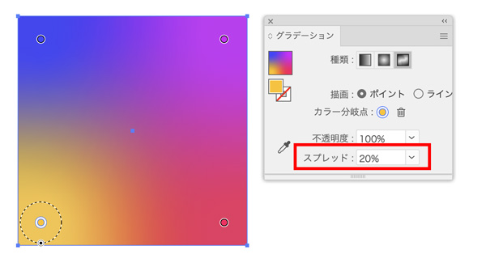

フリーグラデーション
- IllustratorCC2019以降
長方形ツールで正方形を描く
- 色は適宜

正方形にフリーグラデーションをかける
- グラデーションパレットの「種類」一番右の「フリーグラデーション」アイコンを選択
- 四つの角の内側に、丸が表示されています（この丸を「ポイント」と呼びます）

グラデーションの色を設定する
- グラデーションツールを持ったまま各ポイントを選択し、カラーパレットやスウォッチパレットから、好きな色を選びます




グラデーションの広がり具合も設定可能
- ポイントの「スプレッド」（広がり具合）を設定することもできます
